The Complete Survival Guide for TNFSH Students
Table of Contents

這裡 沒有 要介紹什麼
- 南一中的歷史、校園、老師、升學管道…這些我都不熟
- 如何在這三年讀好書拿到好成績，這個不是我的專長，也沒有這種經歷
這裡想談的是：如果你在這三年裡可能會動手做些研究、搞些專題、寫些期刊或論文，那你還需要哪些能力？如何培養這些能力？
所以，這五堂課只會介紹幾種東西
- 研究如何進行研究: 找題目、文獻回顧、研究設計、結果統計
- 研究的過程需要哪些工具
- 各種作業系統(MacOS, Linux)
- 搜尋論文
- 資料整理
- 資料統計
- AI工具
- 各種作業系統(MacOS, Linux)
1. MacOS / Terminal
1.1. Experience operating systems other than Windows
1.1.1. Windows
1.1.1.1. 優點：
- 廣泛相容性：支援各種硬體和軟體，適用於遊戲、辦公、專業應用等多個領域。
- 使用者友好：介面直觀，容易上手，廣泛的使用者基礎和豐富的資源。
- 廣泛支援：大量的第三方軟體和硬體廠商提供支援，豐富的驅動程式。
- 遊戲性能：對最新遊戲的支援和優化，豐富的遊戲庫和遊戲社群。
1.1.1.2. 缺點：
- 安全性問題：由於使用者基數大，成為惡意軟體和病毒的主要目標。
- 成本：Windows作業系統和許多專業軟體需要付費。
- 系統資源需求：較高的系統資源需求，可能在舊硬體上表現不佳。
- 隱私問題：預設設定下的隱私控制不夠嚴格。
1.1.2. macOS
1.1.2.1. 優點：
- 生態系統整合：與其他蘋果裝置（如iPhone、iPad）無縫整合，提供統一的使用者體驗。
- 使用者介面：設計精美，容易上手，注重使用者體驗。
- 安全性：相對封閉的生態系統減少了惡意軟體的風險。
- 專業軟體支援：對創意工作者（如影片編輯、音樂製作）有很好的軟體支援，如Final Cut Pro和Logic Pro。
1.1.2.2. 缺點：
- 成本：蘋果硬體價格較高，整體成本較高。
- 硬體選擇有限：只能使用蘋果提供的硬體，缺乏自訂和擴充性。
- 遊戲支援較弱：相比Windows，macOS的遊戲庫和遊戲性能較弱。
- 軟體相容性：某些特定軟體或專業應用沒有macOS版本。
1.1.3. Linux
1.1.3.1. 優點：
- 免費開源：作業系統免費且開源，可自由修改和發佈。
- 高度可自訂：使用者可以根據需求自訂系統，各種桌面環境和發行版可選。
- 安全性：由於開源和較小的市場份額，惡意軟體和病毒的風險較低。
- 資源效率：對系統資源需求較低，可在舊硬體上流暢運行。
1.1.3.2. 缺點：
- 使用者友好性：初學者可能會遇到學習曲線，某些配置和維護任務需要指令列操作。
- 軟體相容性：某些專業軟體和遊戲沒有Linux版本，需要尋找替代品或使用相容層（如Wine）。
- 硬體支援：部分硬體（如特定的印表機或顯卡）可能缺乏驅動支援或需要手動配置。
- 技術支援：雖然有豐富的社群支援，但沒有官方的客戶服務，一些問題需要使用者自行解決。
1.2. 為什麼要學MacOS?
- 因為你在403教室上課，這裡只有Mac
- 你為了使用電腦工作或玩樂，花了多少時間精力在安裝防毒軟體、防火牆、隨時安裝最新的patch? 人生苦短，除非必要，遠離windows，可以用Linux或MacOS
1.3. MacOS基本操作
1.3.1. 桌面的選單
選單列位於 Mac 螢幕上方。使用選單列中的選單和圖像來選擇指令、執行工作和查看狀態。更多詳細說明請參看macOS 使用手冊1
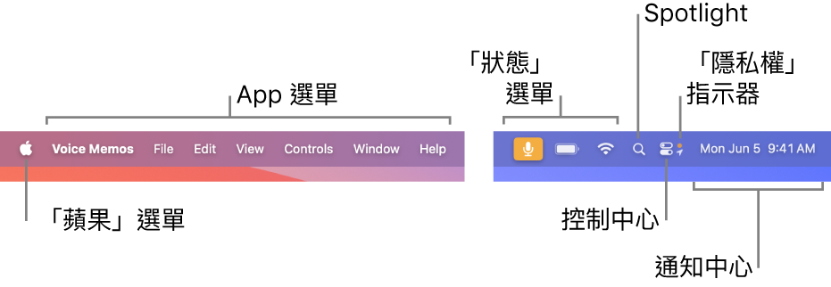
Figure 1: Mac的選單列
1.3.1.1. 「蘋果」選單
「蘋果」選單 位於螢幕左上角，其包含你經常執行的指令，如更新 App、打開「系統設定」、鎖定螢幕或將 Mac 關機1。
1.3.1.2. App 選單
App 選單位於「蘋果」選單旁邊。你正在使用的 App 名稱會以粗體顯示，接著是其他選單，通常含有標準名稱，如「檔案」、「編輯」、「格式」或「視窗」。每個 App 都有「輔助說明」選單，讓你可輕鬆地取得使用 App 的相關資訊1。
1.3.1.3. 狀態選單
選單列的右端是通常以圖像表示，可用於檢查 Mac 的狀態（例如電池電量）或自訂功能（例如鍵盤亮度）的項目（有時稱為狀態選單）1。
1.3.2. Where are you
和Windows/Linux一樣，每台電腦都為每個user建立了一個家目錄，你在這台電腦的所有工作通常都是儲存在這個家目錄底下，在MacOS中，這個目錄在你的電腦硬碟「/Users/使用者名稱」，在Linux中，這個目錄在「/home/使用者名稱」。
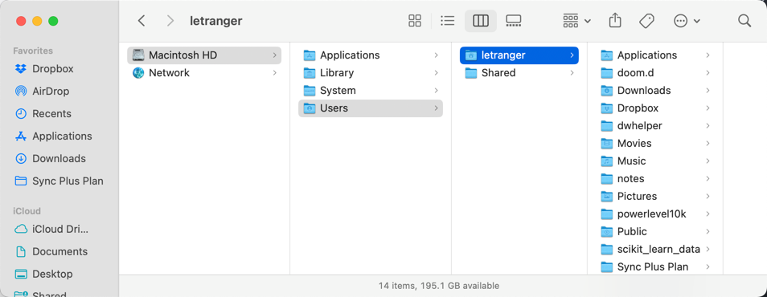
Figure 2: MacOS使用者的家目錄
1.3.3. 如何執行應用程式
1.3.3.1. Docker
Figure 3: Docker
1.3.3.2. Finder
/Applications
1.3.4. 切換輸入法
1.3.5. HotKey
底下的+指的是組合兩個鍵，不是要按+，你可以先按住⌘再按下其他鍵，不用刻意搶在同一時間點按下兩個鍵
- Increase font size: ⌘ + =
- Decrease font size: ⌘ + -
- Select ALL : ⌘ + a
- Copy: ⌘ + C
- Paste: ⌘ + V
- Undo: ⌘ + Z
- Redo: Shift + ⌘ + Z
- Cut : ⌘ + X
- New: ⌘ + N
- Close: ⌘ + W
- Quit: ⌘ + Q
- Save: ⌘ + S
- Print: ⌘ + P
- Force Quit: Option + ⌘ + Esc
1.4. Terminal基本指令
1.4.1. Why you need it
為什麼在圖形化使用者介面如此成熟的現在，你還需要學一些基本的終端機命令
1.4.1.1. 鍵盤操作比滑鼠快
1.4.1.2. 有些功能只能透過指令實現:
相對應的功能在不同作業系統中要安裝其他應用程式
- du
ifconfig / ipconfig
ifconfig -a
ping
ping www.google.com
traceroute
traceroute www.edu.tw
1.4.1.3. python套件管理
- pip
- conda
1.4.1.4. Github
- git clone
1.4.1.5. 管理遠端伺服器
1.4.1.6. 讀取/編輯遠端機器檔案
1.4.2. Where are you
pwd
/Users/letranger
1.4.3. 常用終端機命令
- 練習用素材:
https://github.com/letranger/forPlayingTerminal 語法:
git clone XXXX
| Windows | MacOS / Linux | 說明 |
|---|---|---|
| cd | cd | 切換目錄 |
| cd | pwd | 取得目前所在的位置 |
| dir | ls | 列出目前的檔案列表 |
| mkdir | mkdir | 建立新的目錄 |
| 無 | touch | 建立檔案 |
| copy | cp | 複製檔案 |
| move | mv | 移動檔案 |
| del | rm | 刪除檔案 |
| cls | clear | 清除畫面上的內容 |
| cat | cat | 顯示檔案內容 |
| more | more | 分頁顯示檔案內容 |
2. What is Research
2.1. 研究類型
先從幾種研究類型2來看看典型的研究長什麼樣子
| 研究類型 | 定義 | 範例 |
|---|---|---|
| 調查 survey | 調查是一種透過問卷或訪談從大量的人群中蒐集數據的研究方法。調查通常用於蒐集關於人們的態度、信念和行為的資訊 | 臺灣地區居家護理服務滿意度調查-由執行者與主要照顧者層面探討 |
| 實驗 experiment | 實驗是一種操控一個或多個變數以觀察其對另一個變數的影響的研究方法。實驗通常用於檢驗因果關係。 | 一個結合離散小波轉換與人類視覺特性之數位浮水印技術 |
| 案例研究 case study | 案例研究是一種對個人、群體或事件進行深入查證的研究方法。案例研究通常用於蒐集關於某個特定現象的詳細資訊。 | 文章難易度及主題熟悉度對英語學習者聽力理解影響之個案研究 |
| 觀察 observation | 觀察是一種查看和記錄個人或群體行為的研究方法。觀察經常被用於蒐集關於自然行為的資訊。 | 學前兒童利社會行為的觀察研究：一個幼稚園大班的觀察 |
| 內容分析 content analysis | 內容分析是一種分析和解釋書面文字或口語內容的研究方法。內容分析通常用於分析大量資料，例如新聞報導或社群媒體文章。 | 電視卡通主角呈現價值之內容分析 |
| 歷史研究 historical research | 歷史研究是一種通過初級資料和次級資料（如文件、文物和照片）研究過去事件的研究方法。 | 台閩地區傀儡戲比較研究 |
2.2. 什麼是研究
- 發現問題、提出解決方法
- 社會科學: answer to a question，為一個問題找到最週延可靠的答案，例：高中校園是否該禁用手機
- 自然科學: solution to a problem，為一個問題找到最佳的解決方案時，，如果再加上成本控制就是一個商業solution。例：打造一個人臉識別系統
- research: re-search
- 學術性的定義：一種有系統的、理性的、可量測性的探索，藉由資料蒐集、科學的方法、步驟來找出可解釋的資訊、解決問題的方法或可預測的模型
- 所有的研究都是在對既有學術界知識的挑戰，也許是推翻既有認知，有許是提出新觀點
- 一篇研究最後應該重點只有一句話，這句話講出來對整個學術界或業界能帶來特定貢獻，而整篇研究的目的只在圍繞這句話，為這句話舉證，讓人信服。
2.3. 研究的程序
2.3.1. 找到研究主題
- 你想研究什麼
- 如果你剛進入一個領域，初讀一篇論文時找到一個題目，非常偉大 – 先忘了它，那麼多有背景知識的人讀了這篇文章，為什麼沒想到你的題目，可能是做不出來
2.3.2. 進行文獻回顧
- 了解既有的答案與證據
- 搜尋、評估、篩選、分析、批評、匯整的能力
2.3.3. 設計研究架構
- 如何證明你解決問題的方法有效
- 如何說服別人你的論證或觀點有理
2.3.4. 分析研究數據
- 以數據來為你的方法佐證
2.3.5. 提出結論
- 你的研究總結
3. 如何找研究題目
- 「大部份一看就很厲害的題目」，通常都做不出來
- 「一看就知道做得出來的題目」，通常都很無聊
3.1. 找論文的具體方法
- 大量閱讀論文
- 細讀教科書
- 和教師討論(別找我)
- 和同學畫唬爛
- 現實生活觀察
- 作夢夢到
3.2. 找到一個新題目太難(部份創新)
創新的能力來自蒐集進一步的證據，提出更可靠(改良)的答案或解決方案
- 新場域: 拿現有題目/方法應用於新場域
- 新理論: 原來的題目用新理論來解釋
- 新資料: 原來的題目應用新資料來看結果是否相同
- 新方法: 原來的題目應用新方法
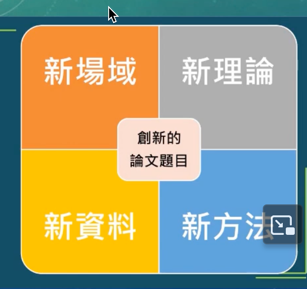
Figure 4: 部份創新
3.2.1. 例1: 新領域
3.2.1.1. 原來技術
聽到這段音樂後
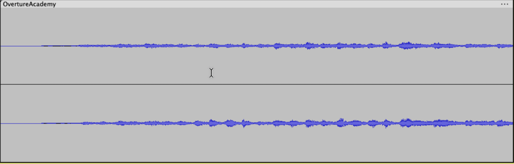
立即猜出整首音樂
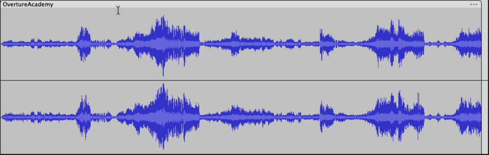
其產品如:
Figure 5: Shazam
Figure 6: SoundHound
基本上就是利用一段連續聲波的前面幾秒內容預測出這是哪首音樂的完整聲波波形，這種技術可以應用到什麼新領域?
3.2.1.2. 新領域
下圖是某個地震波的波形3，你現在會做地震預測了嗎？
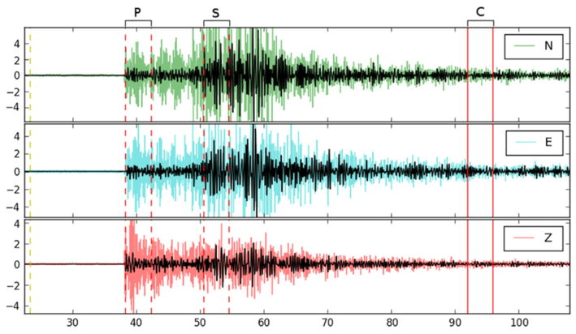
3.2.2. 例2: 新領域
3.2.2.1. 原來技術
- Google Trends
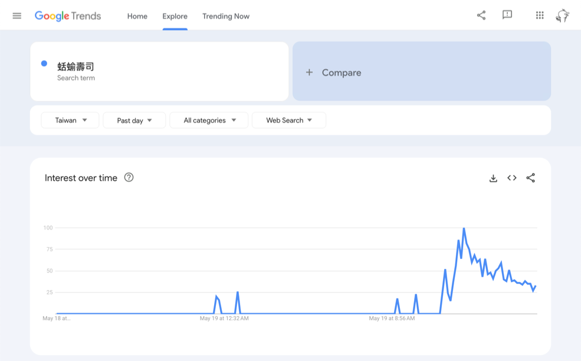
Figure 7: Google Trends
Google Trends 是由 Google 提供的線上工具，用於分析和顯示特定搜索關鍵字在不同時間和地區的相對搜索量。這個工具能夠幫助用戶了解和追踪全球各地的搜索趨勢。主要功能:
- 關鍵字趨勢分析：
- 輸入一個或多個關鍵字，可以查看這些關鍵字在指定時間範圍內的搜索熱度變化。
- 圖表展示搜索熱度的變化趨勢，使用戶直觀地看到關鍵字的流行程度隨時間的變化。
- 輸入一個或多個關鍵字，可以查看這些關鍵字在指定時間範圍內的搜索熱度變化。
- 地區分析：
- 查看特定關鍵字在不同國家、地區或城市的搜索熱度分佈。
- 通過地圖視圖，直觀了解關鍵字在全球各地的受歡迎程度。
- 查看特定關鍵字在不同國家、地區或城市的搜索熱度分佈。
- 比較多個關鍵字：
- 同時輸入多個關鍵字，比較它們的搜索熱度。
- 圖表顯示多個關鍵字的趨勢線，幫助用戶發現它們之間的相對流行度。
- 同時輸入多個關鍵字，比較它們的搜索熱度。
- 相關查詢和主題：
- 查看與輸入關鍵字相關的其他熱門搜索詞和主題。
- 了解用戶在搜索某個關鍵字時，還搜索了哪些相關內容。
- 查看與輸入關鍵字相關的其他熱門搜索詞和主題。
- 按類別過濾：
- 按特定類別（如健康、科技、娛樂等）過濾搜索數據，以獲取更具體的結果。
- 按特定類別（如健康、科技、娛樂等）過濾搜索數據，以獲取更具體的結果。
- 時間範圍調整：
- 用戶可以選擇特定的時間範圍（如過去一小時、過去一天、過去一年或2004年至今）來查看搜索趨勢。
- 靈活的時間設置幫助用戶了解短期和長期的搜索趨勢變化。
- 用戶可以選擇特定的時間範圍（如過去一小時、過去一天、過去一年或2004年至今）來查看搜索趨勢。
- 即時數據：
- 查看幾乎即時的搜索數據，以了解當前的熱門話題和突發事件的搜索趨勢。
- 查看幾乎即時的搜索數據，以了解當前的熱門話題和突發事件的搜索趨勢。
- 關鍵字趨勢分析：
- 使用場景
- 市場研究：企業和行銷人員可以使用 Google Trends 分析消費者興趣和行為，制定更有效的市場策略。
- 內容創作：內容創作者和部落客可以使用該工具尋找熱門話題，優化內容以吸引更多讀者和觀眾。
- SEO 優化：SEO 專家可以利用搜索趨勢數據，選擇合適的關鍵字進行優化，提高網站在搜索引擎中的排名。
- 學術研究：研究人員可以使用 Google Trends 分析社會行為和趨勢，為學術研究提供數據支持。
- 新聞報導：記者和媒體可以通過該工具了解當前熱門話題和事件，更好地報導新聞。
- 市場研究：企業和行銷人員可以使用 Google Trends 分析消費者興趣和行為，制定更有效的市場策略。
3.2.2.2. 新領域
2008年11月谷歌公司啟動的gft項目，目標是預測美國疾控中心(cdc)報告的流感發病率。甫一登場，gft就亮出十分驚艷的成績單。2009年，gft團隊在《自然》發文報告，只需分析數十億搜尋中45個與流感相關的關鍵詞，gft就能比cdc提前兩周預報2007-2008季流感的發病率4。如圖8，Google Trends使用搜尋數據來追蹤和預測美國和世界各地的流感結果5。
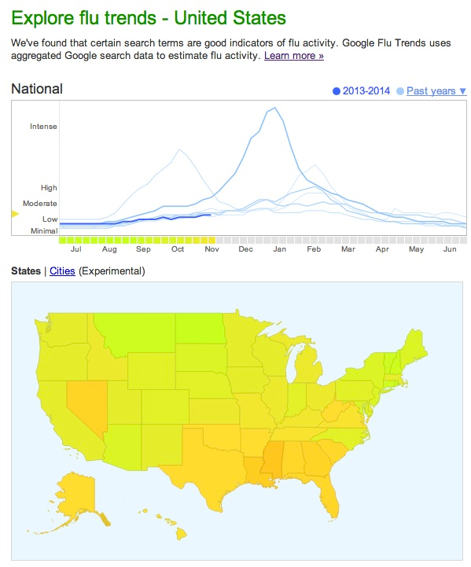
Figure 8: Google flu trends
2014年, lazer等學者在《科學》發文報告了gft近年的表現。2009年，gft沒有能預測到非季節性流感a-h1n1；從2011年8月到2013年8月的108周里，gft有100周高估了cdc報告的流感發病率。高估有多高呢？在2011-2012季，gft預測的發病率是cdc報告值的1.5倍多；而到了2012-2013季，gft流感發病率已經是cdc報告值的雙倍多了4，如下圖6。
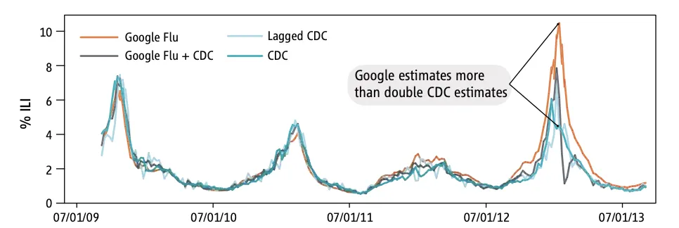
2013年，谷歌調整了gft的演算法，並回應稱出現偏差的罪魁禍首是媒體對gft的大幅報導導致人們的搜尋行為發生了變化。
3.2.3. 例3: 新資料
カゼミル＋(Server not found中)
日本 NHK 新聞報導，日本國內有一個 網站 ，你只要打開這個網站用自己的 Twitter 帳號登入，就可以在短時間內透過數萬條 Twitter 找出可能感冒的人，並藉由過去的感冒情況和今日的感冒情況進行分析（以及統計目前發燒以及嗓子痛的患者數量），另外該程式還會結合氣溫和濕度的變化來預測將來感冒的流行情況，並製作一個「易感冒日曆」7。
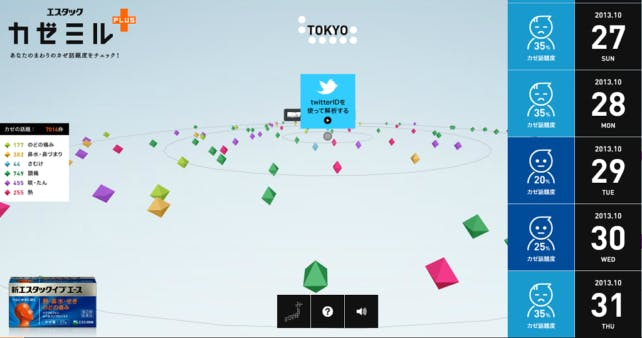
流感君
日本京都大學的荒牧研究室也營運了一個名叫「流感君」（インフルくん）的網站，它主要功能在進行感冒訊息的檢索，可以預測到流感在那個地區比較嚴重以及感染的狀況。這個網站會自動將 Twitter 上的話題進行分類，並選擇出實際感染上流感的留言，然後進行人工編輯，之後，伺服器透過 GPS 定位，在日本地圖上標記感染者所在的位置。如果某個地區的流感有加重的趨勢，那個區域將會被標紅，提醒當地的人注意防範7。
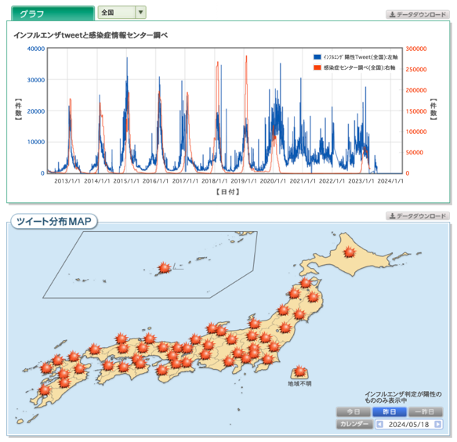
3.2.4. 例4: 新資料
3.2.5. 例5: 新理論/新方法
- 探討主題: 調漲基本工資是否會導致弱勢勞工失業
- 卡德與克魯格利用新澤西和賓夕法尼亞州在不同時間點上調漲最低工資的情況進行實驗研究8。
- 1982年，Brown, Charles, Curtis Gilroy, and Andrew Kohen以新古典模型（Neoclassical Model）預測，調漲最低工資會導致勞動力需求減少，從而導致失業增加，特別是對於技能較低的勞工9。
- 2006年，Neumark, David, and William Wascher以彈性分析（Elasticity Analysis）對同一主題進行研究，通過分析工資彈性和就業彈性，研究最低工資對不同勞動力群體（如青少年、低技能工人）的影響，結果發現最低工資增加對青少年和低技能工人的就業有負面影響，但程度較小10。
- 2010年，Dube, Arindrajit, T. William Lester, and Michael Reich以現代實證研究（Modern Empirical Studies）最低工資對就業的影響(比較鄰近但在不同最低工資政策下的縣市)，結果發現最低工資的增加對低薪工人的就業影響微乎其微，或在某些情況下是正面的11。
- 2016年，Meer, Jonathan, and Jeremy West以動態調整模型（Dynamic Adjustment Models）研究最低工資對就業的長期動態影響，而不僅僅是靜態的短期影響，結果：發現最低工資提高會減緩就業增長，但不會立即導致大規模失業12。
3.2.6. 部份創新的前提
- 對技術有基本理解
- 對新領域有基本理解
- 換句話說：多讀書才有資格談創新
3.3. 如果你覺得你的題目沒價值
每個想法都有其意義，端看其應用場域(應該啦)，就好像一瓶水在不同地點賣不同價格。如果你覺得你這個人沒什麼價值，可能你站錯地點；而如果你覺得你的idea沒什麼用
- 有可能是你找錯應用領域
- 有可能是你用錯方法
- 有可能是你找錯指導老師
- 更有可能是…這個idea真的沒價值
3.4. 什麼是合適的論文(如何修訂題目)
- worth of reading
- 多讀幾篇論文就知道什麼是合適的論文
3.4.1. 什麼是爛題目
3.4.1.1. 生命的意義是什麼
- 問題太大
- 這個問題從古希臘時代所有的哲學家都在回答，但是沒有人同意其他人的回答
- 只有最自大無知的人才會恬不知恥且有自信的回答你「生命的意義在創造宇宙繼起之生命」
3.4.2. 論文題目的修訂
3.4.2.1. 例1:
- 為什麼會發生工業革命？
- 為什麼臺灣會有高速工業化？
- 日治時期的銀行網路對臺灣戰後工業化有什麼影響？
3.4.2.2. 例2:
- 手機對高中生的影響
- 手機使用時間對高中生的影響
- 手機使用時間長度對高中生學業成就的影響
4. 如何閱讀文獻、分析文獻
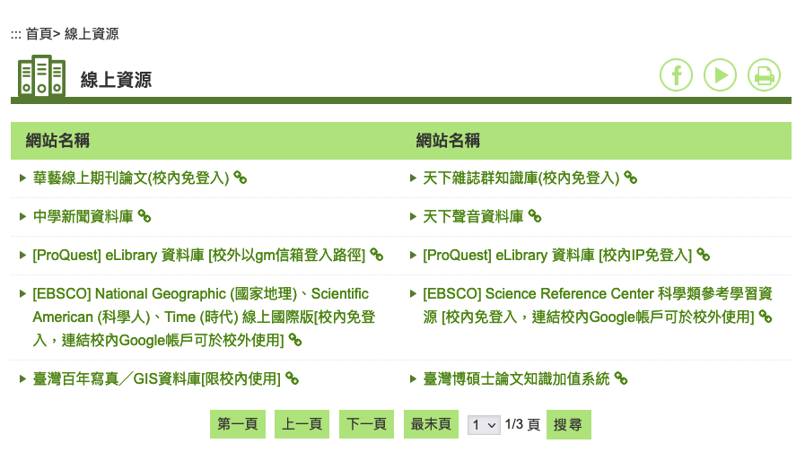
Figure 9: 學校提供的期刊線上資源
4.1. 為什麼要讀文獻
- 1958年美蘇打了三次太空競賽，前兩次蘇俄勝出，因為他們找了100個數學家，讓他們找出三個比他們聰明的數學家，重新定義問題，提出方法；美國第三次勝出的關鍵是斥鉅資(美國國會圖書館)把所有和太空技術有關的paper全部整理出摘要，然後發現許多所需要的solution已經發表在paper中
- 用別人的智慧解決自己的問題，站在巨人的肩膀上，往前跳一步都是創新，把你的聰明才智放在最後那一步
- 累積基礎知識、看文獻只是為了爬到巨人的肩膀
- 人的聰明程度差異不太大，但是用的方法效率差異很大
- 知識經濟時代最重要的不是發揮自己的能力，而是應用別人的能力；台灣首富是郭台銘，但他不是最聰明的人，他會用最聰明的人；台灣最聰明的人可能在台大，但是台大都是窮教授，因為他們只會用自己的智慧
4.2. 找paper的原則與工具
4.2.1. 找論文的原則
- 第一次用的關鍵字找到可能相關的第一批paper，從第一批paper中找出更精確的關鍵字，再搜尋第二批paper
- 找到目標paper，由其中的reference paper往外延伸到其他相關paper
- 找到作者: 依由作者其他paper往外延伸
4.2.2. Google
- Google 關鍵字 filetype:pdf
- Google scholar
- Google Advanced Search
- Google Image Search
- Google Book Search
4.2.3. 博碩士論文知識加值系統
- 博碩士論文網: 基於學位授予法，國家圖書館為國內唯一博碩士論文法定寄存圖書館
- 登入會員的優點: SDI、記錄檢索歷史、線上問卷服務
- 系統裡的所有論文幾乎都能在Google找到，可以加限縮(主題 ndlpd)
- 找到一篇論文後，由引用論文延伸擴散繼續搜尋(可由被引用數、被點閱數、被下載數來觀察各論文的人氣指數)，再由排序順序來找到可以優先查看的其他論文
- 輸出管理: 可以輸出書目APA格式或RIS格式
- 我的研究室: 可以看歷史查詢記錄
- 物聯網 運算
4.2.4. ResearchGate
ResearchGate 是一個專為科學家和研究人員設計的社交網絡平台。它的主要用途包括：
- 分享和發現研究成果：研究人員可以在平台上上傳自己的論文、文章、書籍和其他研究材料，並與全球的同行分享。
- 互動和合作：ResearchGate 提供了討論區和問答功能，研究人員可以在這裡討論研究問題、尋求建議，並尋找合作夥伴。
- 研究影響力：平台會追蹤研究材料的下載和引用次數，幫助研究人員了解他們的研究影響力和受歡迎程度。
- 資源和工具：ResearchGate 還提供了各種工具和資源，幫助研究人員進行數據分析、尋找工作機會和了解最新的研究趨勢。
- 個人資料和網絡：用戶可以創建個人學術檔案，展示他們的研究歷史和專業背景，並擴展他們的專業網絡。
- 期刊上找不到PDF的論文可以試著直接跟原作者要
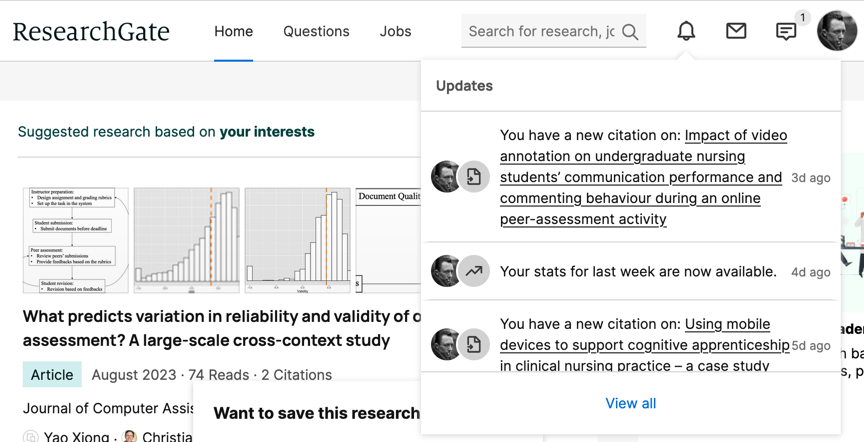
Figure 10: ResearchGate
4.2.5. ProQuest
- 使用方式參考圖9
ProQuest 是一家提供全球學術研究和教育支持的公司，擁有多個數字資料庫和信息服務。以下是 ProQuest 的主要定位和功能：
- 多學科資料庫：ProQuest 提供廣泛的多學科資料庫，包括人文、社會科學、醫學、工程、科學技術等各個領域的學術期刊、論文、書籍、報紙、雜誌等資料。
- 學術論文和研究文獻：ProQuest 收錄了大量的博士論文、碩士論文和學術研究報告，為研究人員提供豐富的原始資料來源。
- 專題資料庫：ProQuest 提供專門針對某些領域的資料庫，如商業、法律、教育、藝術和人文學科等，滿足不同學科研究的需求。
- 全文檢索和獲取：用戶可以通過 ProQuest 的強大搜索引擎，檢索和獲取全文資料，並且可以按需下載或在線閱讀。
- 歷史文獻和報紙檔案：ProQuest 也包含大量歷史文獻和報紙檔案，提供了豐富的歷史研究資源，適合歷史學者和研究人員使用。
- 圖書和電子書：除了期刊和論文，ProQuest 還提供大量的電子書和圖書資源，方便用戶進行多樣化的學術研究。
- 教育和學術支持：ProQuest 為教育機構、圖書館和研究機構提供支持，幫助他們有效管理和利用數字資源，並提供培訓和技術支持。
ProQuest 在學術研究和教育領域中扮演著重要角色，通過其全面的資料庫和信息服務，為全球研究人員和學生提供豐富的資源和支持。
4.2.6. EBSCO
- 使用方式參考圖9
EBSCO 是一家提供信息資源和服務的公司，專注於支持學術研究、教育和企業的需求。以下是 EBSCO 的主要定位和功能：
- 多學科資料庫：EBSCO 提供多種資料庫，涵蓋各種學科領域，如人文、社會科學、醫學、科學技術、教育等，為研究人員和學生提供豐富的學術資源。
- 全文檢索和獲取：EBSCO 提供強大的搜索引擎，用戶可以方便地檢索到期刊文章、書籍、報紙、雜誌等資料，並獲取全文內容。
- 專題資料庫：EBSCO 有針對特定學科或主題的專門資料庫，如 Business Source Complete（商業資料庫）、CINAHL（護理和健康資料庫）、ERIC（教育資料庫）等，滿足特定領域的研究需求。
- 電子書和電子期刊：EBSCOhost 提供大量電子書和電子期刊，供用戶在線閱讀和下載，擴展了傳統圖書館的資源。
- 歷史文獻和檔案：EBSCO 也收錄大量的歷史文獻和檔案資料，支持歷史研究和學術探討。
- 教育支持和教學資源：EBSCO 為教育機構提供教學資源和課程支持，包括教師用的教學材料和學生用的學習資源，幫助提升教育質量。
- 圖書館管理服務：EBSCO 為圖書館提供管理服務，幫助圖書館有效管理其數字資源，並提供技術支持和培訓。
- 個性化服務和工具：EBSCO 提供個性化的研究工具，如文獻管理、書籤、標注等功能，幫助用戶更有效地進行研究和學習。
EBSCO 的目標是通過提供全面的學術資源和先進的技術支持，促進全球學術研究和教育的發展。
4.2.7. ProQuest v.s. EBSCO
ProQuest 和 EBSCO 是兩個主要的學術資源和信息服務提供商，雖然它們在許多方面有相似之處，但也有一些顯著的差異。以下是它們的比較：
4.2.7.1. 相似之處
- 多學科資料庫：兩者都提供涵蓋各種學科領域的多學科資料庫，如人文、社會科學、醫學、科學技術和教育等。
- 全文檢索和獲取：兩者都提供強大的全文檢索和獲取功能，用戶可以方便地檢索到期刊文章、書籍、報紙、雜誌等資料，並獲取全文內容。
- 專題資料庫：ProQuest 和 EBSCO 都有針對特定學科或主題的專門資料庫，滿足特定領域的研究需求。
4.2.7.2. 差異之處
- 資料庫範圍和專業化：ProQuest：其資料庫範圍廣泛，包括博士論文和碩士論文、歷史文獻和報紙檔案等，特別擅長於人文社會科學和商業領域的資料。
- EBSCO：除了學術期刊和書籍外，EBSCO 也提供大量的電子書、歷史文獻和檔案資料，並且在護理和健康資料庫（如 CINAHL）方面有顯著的優勢。
- 教育支持和教學資源：EBSCO：提供更多的教育支持和教學資源，如教師用的教學材料和學生用的學習資源，幫助提升教育質量。
- ProQuest：更多專注於學術研究支持，提供專業的研究工具和資源，但在教學資源方面不如 EBSCO 廣泛。
- 技術和服務：ProQuest：提供高級的資料管理和研究工具，如 RefWorks，用於文獻管理和引用。EBSCO：提供個性化的研究工具，如文獻管理、書籤、標注等功能，並且在圖書館管理服務方面提供更多技術支持和培訓。
- 電子書和電子期刊：EBSCO：擁有大量的電子書和電子期刊，特別是教育和醫學領域的電子資源。
- ProQuest：也提供電子書和電子期刊，但其強項在於傳統期刊和學位論文。
4.2.7.3. 結論
ProQuest 和 EBSCO 都是優秀的學術資源平台，各有優勢。ProQuest 更適合需要廣泛學術論文和歷史檔案的用戶，而 EBSCO 則在教育支持和健康科學資料庫方面有顯著優勢。選擇哪一個平台應根據具體的研究需求和學科領域來決定。
4.2.8. paperwithcode
Paper with Code 是一個專注於將學術論文與其對應的代碼資源相結合的平台。它的主要定位和功能如下：
- 學術論文與代碼的結合：該平台收集了大量的機器學習和人工智慧領域的學術論文，並提供這些論文對應的開源代碼，方便研究人員直接使用和驗證研究結果。
- 方便的搜索和瀏覽：用戶可以通過關鍵詞、研究領域、數據集等多種方式進行搜索，快速找到相關的論文和代碼資源。
- 基準測試和排行榜：平台上還提供了各種基準測試和排行榜，用於比較不同方法在標準數據集上的表現，幫助研究人員了解當前最先進的方法和技術。
- 社區貢獻：研究人員可以上傳自己的論文和代碼，與全球的同行分享他們的研究成果，促進學術交流與合作。
- 資源整合：Paper with Code 也會整合其他相關資源，例如數據集、預訓練模型和教程，為研究人員提供一站式的學習和研究平台。
這個網站在促進學術研究的透明度和可重複性方面發揮了重要作用，使得更多的研究人員能夠方便地訪問和使用最新的研究成果和技術。
4.2.9. PubMed Central
- National Library of Medicince: 美國健康研究院公共資料庫，每天83萬次點擊、160萬篇論文下載
PubMed Central (PMC) 是美國國家生物技術信息中心（NCBI）運營的免費數字存儲庫，專門用於存放生物醫學和生命科學領域的全文期刊文章。它的主要定位和功能如下：
- 免費訪問學術文章：PMC 提供了大量經過同行評審的學術期刊文章的免費全文訪問，支持開放獲取（Open Access）理念，旨在使科學研究更加透明和可用。
- 廣泛的學科覆蓋：該平台涵蓋了生物醫學和生命科學的多個學科，包括醫學、公共衛生、生物學、遺傳學、神經科學等領域，為研究人員、醫療從業者和學生提供豐富的資源。
- 高效的搜索和檢索功能：PMC 提供強大的搜索引擎和檢索工具，用戶可以通過關鍵詞、作者、期刊名稱、出版日期等多種方式快速找到所需的文章。
- 文獻鏈接和引用：平台上的文章通常與其他科學文獻和數據庫（如PubMed、GenBank）相互鏈接，方便用戶進一步查閱相關研究成果和數據。
- 持續更新和存儲：PMC 定期更新，持續增加新的期刊和文章，並確保數字化內容的長期存儲和保存，維持資料的持久可用性。
PubMed Central 在促進科學知識的共享和傳播方面發揮了重要作用，為全球的研究社群提供了一個可靠和便捷的資源平台。
4.3. 讀paper的方法
- 關鍵字review paper: 這類paper不提出創新的方法，就只是在比較各種方法的優缺點
- 讀論文要回答的問題: 如何找出一個更好的方法？要思考為什麼某一種方法不能表現更好？它是因為有哪些基本假設或條件限制？還是在處理過程中做了什麼不對的事？我讀論文只是為了回答這個問題，所以讀論文時要聚焦，懷著某一種問題來看論文。
- 所有論文最難懂的是研究方法與實驗設計
- 每次讀一篇paper不用全懂，只針對重要的問題來看，看完要能回答問題，所以是參考，不是全部讀懂
- 要懷著自私的心態來看論文，
- 讀論文不是讀課本，不用太在乎細節
4.3.1. 看不懂paper怎麼辦
如果你看不懂找到的paper: 由淺入深填補背景知識，一般來說，閱讀難度大概是: 期刊論文 > 博士論文 > 課本 > Wikipedia。
如果你看不懂某篇paper，可以依序查看:
- 作者的論文
- 教科書
- 網路教學文
- 知識型的Youtuber
如果還是看不懂，表示這不是你目前該研究的主題
4.3.2. 讀paper的不同境界
如果把讀paper的技能分級，大概有以下幾類
- 低: 讀遍所有相關paper只找到部份idea
- 中: 讀遍所有相關paper找到可用的idea
- 高: 讀挑中的幾篇paper找到可用的idea
4.4. 如何記錄你的想法
- you need a place to store your notes, store the things you find
- 軟體很多，從最簡單的做起: 資料夾
- 最基本的功能: backtrace
- 格式越簡單越原始越好
4.4.1. apps
- Bear Markdown Notes
- Goodnotes
- Notability
- Notion
- Emacs/org-mode
4.4.2. web
- hackmd.io
4.4.3. 雲端硬碟
- Dropbox
- Google Drive
- OneDrive
5. 有了問題，如何設計研究
有了研究成果，如何證明其有效
5.1. 紅茶與牛奶的沖泡順序13
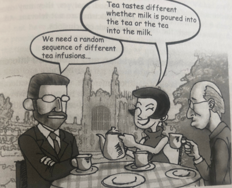
Figure 11: Tea time
- 時間: 1920 年代的劍橋大學，某個風和日麗的夏天下午，一群人優閒地享受下午茶時光。
起因: 有位女士(生物學家 Muriel Bristol14)說：「沖泡的順序對於奶茶的風味影響很大，把茶加進牛奶裡和把牛奶加進茶裡，這兩種沖泡方式所泡出的奶茶口味截然不同。」，而且她有能嚐出二者差異的超能力。
Figure 12: Muriel Bristol
Fisher 說: “林北聽妳在唬爛(That’s impossible.)“
Figure 13: Sir Ronald Aylmer Fisher
- 推手: 化學家 William Roach 為了拍 Muriel Bristol 馬屁，建議做個實驗
- 結果: 現代統計學誕生
- 問題: 如果你是 Fisher，你要怎麼證明 Bristol 是對的或錯的? 實際泡茶? 怎麼泡? 要泡幾杯、讓 Bristol 猜幾杯才能確定 Bristol 的超能力。
- 八卦: 費雪在 1935 年的文章中並沒有告訴我們當時這位女同事到底猜對了幾杯，但根據費雪女兒後來的說法是，這位女同事當時全答對了（Agresti 2002, p.92）。
5.2. 如何設計研究
也就是所謂的實驗設計(Design of Experiment)，目前的模擬情境如下，請各組針對該情境提出你們的實驗設計方案
5.2.1. 研究問題1
台南某高中電腦教師自創了一套程式設計教學法(電療教學法)，方法是在學生座椅下安裝電擊裝置，當學生送出的程式碼出錯後就予以電擊回饋，他想在未被告上法院前評估這套教學法的成效，應如何進行？
5.2.1.1. 任務
請各組提出實驗設計，詳細說明以下資訊
- 實驗詳細流程: 越詳細越好，包括你們打算找多少學生參加實驗？如何找？想教哪個單元？實驗為期多久？如何分派教師？實驗結束後如何評估效果….
- 實驗組(experimental group)
- 控制組(control group)
- 實驗中的自變項(independent variable)
- 實驗中的依變項(dependent variable)
- 實驗中的控制變項(control variable)
- 依據上面的設計，各組打算如何評估實驗結果，提出你們的結論(該教學法有效或無效)
- 你們的實驗是否具備可複製性(replication): 也就是說當後來的其他資訊科老師採用相同的實驗設計，應可獲得相似的研究結果。
5.2.2. 研究問題2
如果你要研究維他命C攝取量與感冒的關係，你要如何進行實驗設計？
5.2.2.1. 任務
請各組提出實驗設計，詳細說明以下資訊
- 實驗詳細流程: 越詳細越好，包括你們打算找多少人參加實驗？如何找？實驗如何進行？為期多久？
- 實驗組(experimental group)
- 控制組(control group)
- 實驗中的自變項(independent variable)
- 實驗中的依變項(dependent variable)
- 實驗中的控制變項(control variable)
- 你的實驗中是否有中介變項(Mediator)
- 依據上面的設計，各組打算如何評估實驗結果，提出你們的結論
- 你們的實驗是否具備可複製性(replication)
- 你們的實驗是否違反研究倫理
5.2.2.2. 研究倫理
舉凡以人作為研究的觀察、參與、實驗對象，所可能牽涉的公共道德爭議與規範，均在研究倫理討論的範疇內。瞭解並重視研究倫理之目的在於，透過對於這些公共道德爭議的釐清與相關規範的建立，讓研究本身不僅是在充分尊重被觀察對象、參與者、實驗對象的權益之情況下進行，且是在可被公眾信賴的基礎上持續進展，以善盡研究者對於研究參與者個人、社群與社會的責任。
6. 如何分析實驗結果
完成實驗後，你大概會得到很多的數據資料，你要如何分析這些資料?
6.1. 關於統計
6.1.1. 描述統計（Descriptive Statistics）
描述統計主要用於總結和描述數據的基本特徵，透過各種方法來呈現數據的概要資訊。它不涉及對整體數據之外的推論或預測。描述統計的主要工具包括：
- 集中趨勢測量：如平均值（Mean）、中位數（Median）和眾數（Mode）。
- 變異性測量：如範圍（Range）、四分位距（Interquartile Range, IQR）、標準差（Standard Deviation）和方差（Variance）。
- 分佈測量：如頻率分佈（Frequency Distribution）、百分比（Percentage）和直方圖（Histogram）。
- 圖形表示：如條形圖（Bar Chart）、折線圖（Line Graph）、餅圖（Pie Chart）和箱形圖（Box Plot）。
6.1.2. 推論統計（Inferential Statistics）
推論統計則超越了對數據的描述，主要用於從樣本數據推論到更大的母體，並對母體特徵進行預測和假設檢驗。推論統計使用的主要方法包括：
- 估計：如點估計（Point Estimation）和區間估計（Interval Estimation），用來估計母體參數（如母體平均數和比例）。
- 假設檢定：如 t 檢驗（t-test）、卡方檢驗（Chi-Square Test）、ANOVA（分析變異數，Analysis of Variance）和回歸分析（Regression Analysis），用來檢驗假設是否成立。
- 信賴區間：用來表示母體參數的範圍，通常以一定的信心水準（如 95%）給出。
- 相關分析：如皮爾森相關係數（Pearson Correlation）和斯皮爾曼相關係數（Spearman Correlation），用來測量變量之間的相關程度。
6.2. 案例1: 單組前後測
在前述「電療教學法」的研究中，如果你因為實際實驗環境限制選擇了「單組前後測設計」的方案，得到以下的實驗數據：
| 學生座號 | 1 | 2 | 3 | 4 | 5 | 6 | 7 | 8 | 9 | 10 |
| 前測得分 | 80 | 57 | 53 | 68 | 70 | 69 | 65 | 62 | 91 | 78 |
| 後測得分 | 78 | 62 | 61 | 82 | 80 | 63 | 62 | 65 | 100 | 88 |
- 根據這些實驗數據，「電療教學法」有能提升學生的程式設計能力嗎?
- 你的數學依據是什麼?
6.2.1. R語言
本題的例子為單一樣本重複量測，故選擇Paired sample t-test檢測兩次量測前後的平均值是否不同
1: pre=c(80 , 67 , 53 , 98 , 70 , 69 , 65 , 69 , 91 , 78) 2: post=c(78 , 62 , 61 , 82 , 77 , 63 , 62 , 65 , 100 , 88) 3: t.test(post,pre,paired=T,alternative="greater",var.equal=T)
Paired t-test
data: post and pre
t = -0.075023, df = 9, p-value = 0.5291
alternative hypothesis: true mean difference is greater than 0
95 percent confidence interval:
-5.086773 Inf
sample estimates:
mean difference
-0.2
- 結果顯示，t值為-0.075023。在統計檢驗中，t 值的符號（正或負）僅僅表明差異的方向，而不是差異的顯著性
- p-value為0.5291>0.05(預設的顯著性水準），所以接受虛無假設，我們有95%的信心聲稱新教學法並未能提升學生的程式設計能力。
6.2.2. 練習
同樣的資料分析方式可以應用於不同研究情境中，例如：分析一群成長中青少年服用轉骨藥方三個月後，身高是否較服用前高？
| 案例編號 | 1 | 2 | 3 | 4 | 5 | 6 | 7 | 8 | 9 | 10 | 11 | 12 |
| 服藥前身高 | 158 | 162 | 179 | 166 | 151 | 142 | 148 | 170 | 177 | 160 | 153 | 155 |
| 3個月後身高 | 159 | 163 | 179 | 165 | 153 | 145 | 152 | 171 | 179 | 161 | 155 | 155 |
請你以R語言完成分析並解釋結果
6.3. 案例2: 隨機分組前後測
6.4. 如何淨化數據
目標：使學生能夠理解並實施基本的資料分析技術。
內容：
統計學的基本概念：描述性統計、概率、推斷性統計
常用的統計方法：迴歸分析、方差分析等
使用 Excel 和 Google Sheets 進行基礎數據分析
6.5. 工具
6.5.1. Excel / Google worksheet
6.5.2. SAS / SPSS
6.5.3. R
6.5.3.1. chart
1: ls() 2: Speed <- cars$speed 3: Distance <- cars$dist 4: plot(Speed, Distance, panel.first = lines(stats::lowess(Speed, Distance), pch=0, cex=1.2, col="blue"))
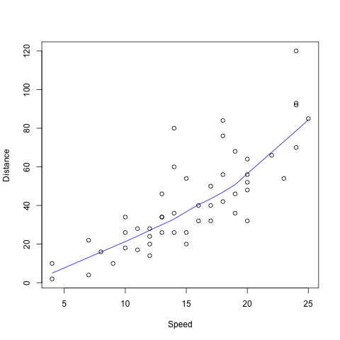
6.5.4. Python
- pycharm
- colab
7. APA
7.1. APA第七版
7.2. EndNote
8. 結論
8.1. 保持批判精神
- 批判思考的能力: 分析既有的答案，評估其可信度與待釐清的疑點
- 我講了這麼多，你全盤接受嗎?你怎麼知道我不是在唬爛?
- 現實世界最重要要學的不是知識，拿keyword去問google可以學到太多知識
- 陳述事實或轉述他人觀點時，不輕易同意自己或他人的主張，會警覺到疑點且有所保留: 批判自己，我為什麼是對的？別人為什麼是錯的？
如何保持批判精神?
- critical reading: 用critical的方式閱讀
- critical thinking: 自我批判，最重要的點是open minded，我憑什麼相信我是對的，我憑什麼相信他講的是對的，出發點是自我批判，
- critical writing: 我講的每句話都有充份的理由，禁的起別人的批判，所有的結論都有前提
8.2. 學習的重點
也許在這幾堂課中我介紹了某些特定知識、工具，但你要記得三件事:
- 現在你們學到知識可能在以後都用不到
- 未來你們所要解決的問題，學校的老師並不了解
- 未來你們所要使用的科技，現在並不存在
所以要學什麼? 方法
9. 玩一下AI
- teachable machine
- orange
- colab
Footnotes:
Card, David, and Alan B. Krueger. “Minimum Wages and Employment: A Case Study of the Fast Food Industry in New Jersey and Pennsylvania.” American Economic Review, 1994.
Brown, Charles, Curtis Gilroy, and Andrew Kohen. “The Effect of the Minimum Wage on Employment and Unemployment.” Journal of Economic Literature, 1982.
Neumark, David, and William Wascher. “Minimum Wages and Employment: A Review of Evidence from the New Minimum Wage Research.” NBER Working Paper No. 12663, 2006.
Dube, Arindrajit, T. William Lester, and Michael Reich. “Minimum Wage Effects Across State Borders: Estimates Using Contiguous Counties.” Review of Economics and Statistics, 2010.
Meer, Jonathan, and Jeremy West. “Effects of the Minimum Wage on Employment Dynamics.” Journal of Human Resources, 2016.